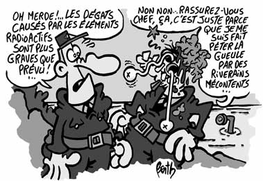

Atoms for peace
Le printemps revient, c’est la saison des manifs. Alors que le soleil endormi semble encore hésiter à nous réchauffer de ses rayons dorés, d’aucuns n’hésitent pas à venir battre le pavé contre d’autres rayons. La semaine dernière, Cherbourg a été le théâtre d’une manif anti-nucléaire mondiale. Mondiâle, la manif ! Eh oui, « Sortir du nucléaire » revendique 720 associations, 41 pays… 12.000 manifestants selon la police. Ah c’est sûr, ça fait petit joueur après les manifs anti-CPE, le public est blasé, c’est comme diffuser un Bergman en VO un soir de finale footesque. En moins subtil. 720 associations, 12.000 personnes, ça fait une moyenne de 17 personnes par association. J’imagine la bande de potes qui se retrouvent le samedi soir, poster de Sai Baba au mur et tofu bio dans l’assiette, la guitare au coin du feu, un petit maté aux pissenlits et on planifie les week-ends sit-in à Flamanville ou camping à Cadarache…

Mais ces manifs anti-nucléaires ont toujours lieu près des centrales ou des centres de retraitement. Jamais près des hôpitaux. Pourtant la radiothérapie utilisée pour traiter certains cancers s’appuie sur les rayons Gamma. Reçus à dose élevée ils provoquent des brûlures et des cancers, et il faut 20cm de béton pour diminuer leur énergie de 90%. Au cours d’un traitement de 5 semaines, la dose reçue peut aller jusqu’à 60 Gray. Ce qui sur la peau correspond à une dose absorbée de 600 mSv. Depuis août 2003 la dose annuelle maximale légale en Europe pour une personne travaillant sous rayonnements ionisants est de… 20 mSv. Pour la population, notamment celle vivant à côté d’une centrale, le maximum annuel est de 1 mSv. Quelques doses naturelles :
- Irradiation cosmique
- un aller-retour Paris-New York : 0,6 mSv
- un an à 2000m d’altitude : 1 mSv
- Irradiation terrestre
- un an en Bretagne côtière ou dans le Massif Central : 1 mSv
- un an dans l’état de Minaes Geraes au Brésil : 10 mSv
De plus les maisons en pierres de certaines régions comme le Finistère exhalent du Radon, peu radioactif mais l’exposition par inhalation étant beaucoup plus forte, un an dans une telle maison peu ventilée conduit à l’absorption d’une dose de 5 mSv. Avec tout ça, la moyenne en France est d’environ 2.5 mSv naturels par an. Et 5 fois plus dans certaines régions.
Donc autant les 1 mSv susceptibles d’être absorbés par les riverains d’une centrale c’est rien, autant les 600 mSv d’une radiothérapie, c’est énorme. Quand ça se passe bien. Car si le contrôle est très strict sur les installations nucléaires (tous les incidents sont publiés sur le site de l’ASN), ça semble un peu moins rigoureux dans les hôpitaux. Le 11 mars une patiente est morte après avoir reçu une dose mortelle en radiothérapie. L’enquête a « mis en évidence une erreur d’unité de mesure (cm au lieu de mm) dans la définition du champ d’irradiation, cette unité n’ayant pas été précisée entre deux opérateurs ». L’ASN a lancé une étude sur ce type d’incidents.
Bref c’est bien d’être vigilant sur les centrales, mais c’est un peu comme critiquer Arte parce que le Bergman est en VF, alors que TF1 diffuse le Bigdil.